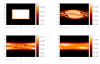

ANR LORIS¶
Numerical Computation of Large Deviations and out-of-equilibrium Statistical Mechanics of Turbulent Flows
Directed by : Stefano Ruffo, ENS de Lyon
Stefano.Ruffo [at] ens-lyon.fr
Funded by ANR-LORIS
Members of the group:
Shamik Gupta (ENS de Lyon, France)
Cesare Nardini (ENS de Lyon, France, and University of Florence, Italy)
Aurelio Patelli (University of Florence, Italy)
Collaborations:
Thierry Dauxois (ENS de Lyon and CNRS, France)
Freddy Bouchet (ENS de Lyon and CNRS, France)
Julien Barré (University of Nice, France)
Pierre-Henri Chavanis (IPT-CNRS, Toulose, France)
Alessandro Campa (ISS, Rome, Italy)
Duccio Fanelli (University of Florence, Italy)
Giovanni de Ninno (University of Nova Goritza, Slovenia)
Romain Bachelard (University of Nova Goritza, Slovenia)
David Mukamel (Weizmann Institute of Science, Israel)
Research project¶
Long-range interactions can be found in astrophysics, plasma physics, hydrodynamics, atomic physics, nuclear physics, solid-state physics, and disordered systems. Their statistical and dynamical properties are much less understood than those of short-range interactions. An interaction is long-ranged if, for sufficiently large distances, the two-body potential decays with a power that is smaller or equal to the space dimension. Our project is focused on the out-of-equilibrium properties of long-range systems, relying on the tools of statistical mechanics. The aim of statistical mechanics is to derive thermodynamic properties of a macroscopic system from microscopic interactions. The connection between microstates and macrostates is realized through the introduction of statistical ensembles when dealing with systems in equilibrium. It is usually stated, and experimentally verified for many physical systems with short-range interactions, that, as far as macroscopic averages are concerned, i.e., in the thermodynamic limit, the predictions of statistical mechanics do not depend on the chosen ensemble. On the contrary, for long-range systems, ensembles can be inequivalent. Therefore, one of the main objectives of the theoretical studies of these systems is to explore the relation between the various ensembles, probe the conditions under which they become inequivalent, and determine the ensemble appropriate for a given experimental set-up. Ensemble inequivalence is not merely a mathematical drawback, it is the consequence of fundamental physical properties of long-range systems. Probably one of the most striking features of long-range systems is the possibility to display negative specific heat in the microcanonical ensemble, which is a consequence of ensemble inequivalence.
As far as outofequilibrium properties are concerned, long-range systems show peculiar behaviours. The approach to equilibrium can be extremely slow: it takes place on time scales which grow with the system size (for short-range systems, relaxations occur on an intensive time scale). The state of the system during this long transient is quasistationary, since its very slow time evolution allows one to define slowly varying macroscopic observables, as for local equilibrium or quasistatic transformations. The explanation of the widespread presence of quasistationary states relies upon the study of the dynamical properties of systems with long-range interactions. In the continuum limit, long-range interacting systems admit a kinetic description in terms of the Vlasov equation. Within this scenario, quasistationary states correspond to stable stationary states of the Vlasov equation. Finite-sized system relaxes to equilibrium due to corrections to the Vlasov equation, a study of which must be performed in the context of appropriately devised kinetic theories. The problem of developing a rigorous statistical mechanical treatment of quasistationary states is one of the aims of our project. A system can be driven out of equilibrium by putting it under the action of an external force or an electric field, or it may be coupled to thermostats at different temperatures. Even in the case in which the bulk dynamics is conserving and local, such systems are characterized by long-range correlations, which lead, e.g., to phase transitions and long-range order even in one dimension. In some models, features characteristic of long-range interactions, such as ensemble inequivalence have been observed. In specific cases, it can even be shown that, in the range of parameters where detailed balance is satisfied, the weight of configurations is given by an effective Hamiltonian which has explicit long-range terms. This is also a direction to be explored further in our project, which can elucidate the connection between long-range correlations and long-range interactions.
Although different aspects of systems with long-range interactions have been studied in the past in specific scientific communities, notably, astrophysics and plasma physics, this has not constituted a seed for more general theoretical studies. In the last decade or so, it has become progressively clear that the ubiquitous presence of long-range forces needs an approach that integrates different methodologies. This has induced a widespread interest in long-range systems among numerous research groups in the world. Our project is at the frontline of research in this new field and benefits from collaboration with other projects run at ENS de Lyon and Centre Blaise Pascal by Freddy Bouchet and Thierry Dauxois.
References¶
T . Dauxois, S. Ruffo, E. Arimondo, M. Wilkens (Eds.), Dynamics and Thermodynamics of Systems with Long Range Interactions, Les Houches Winter School 2002, Lecture Notes in Physics, 602, Springer (2002).
A . Campa, A. Giansanti, G. Morigi and F. Sylos Labini (Eds.), Dynamics and Thermodynamics of Systems with Long Range Interactions: Theory and experiments, Satellite conf. of Statphys23, AIP Conf. Proceedings, 965, 122, (2008).
A . Campa, T. Dauxois and S. Ruffo, Statistical mechanics and dynamics of solvable models with long-range interactions, Physics Reports, 480, 57 (2009).
T . Dauxois, S. Ruffo and L. Cugliandolo (Eds.), Long-range interacting systems, Les Houches Summer School 2008, Oxford University Press (2009).
F . Bouchet, S. Gupta and D. Mukamel, Thermodynamics and dynamics of systems with long-range interactions, Physica A, 389, 4389 (2010).
Contribution du Centre Blaise Pascal à ce projet¶
Occupation de 2 bureaux dans l’espace geré par le CBP pendant les 2 ans de la durée du projet
Soutien financier et organisationnel pour un workshop en 2012
Gestion du site web du projet
Environnement scientifique agréable pour l’aménagement du projet